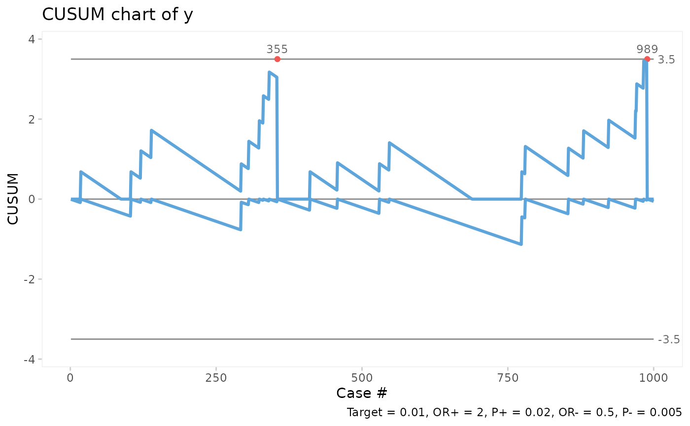
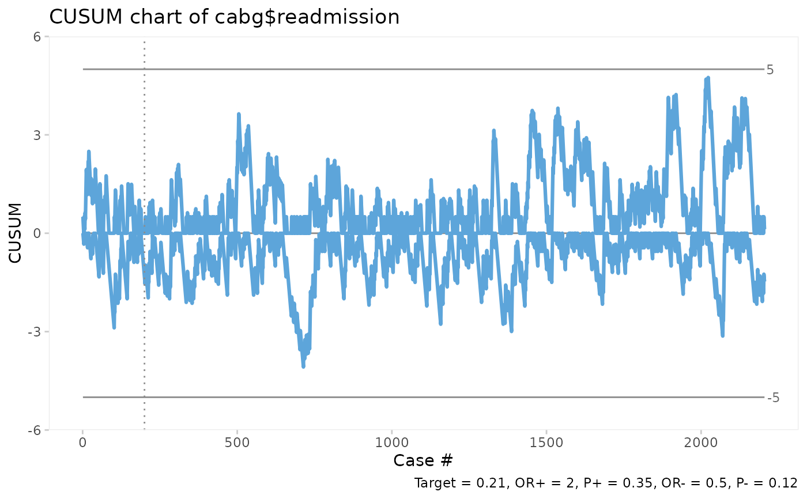
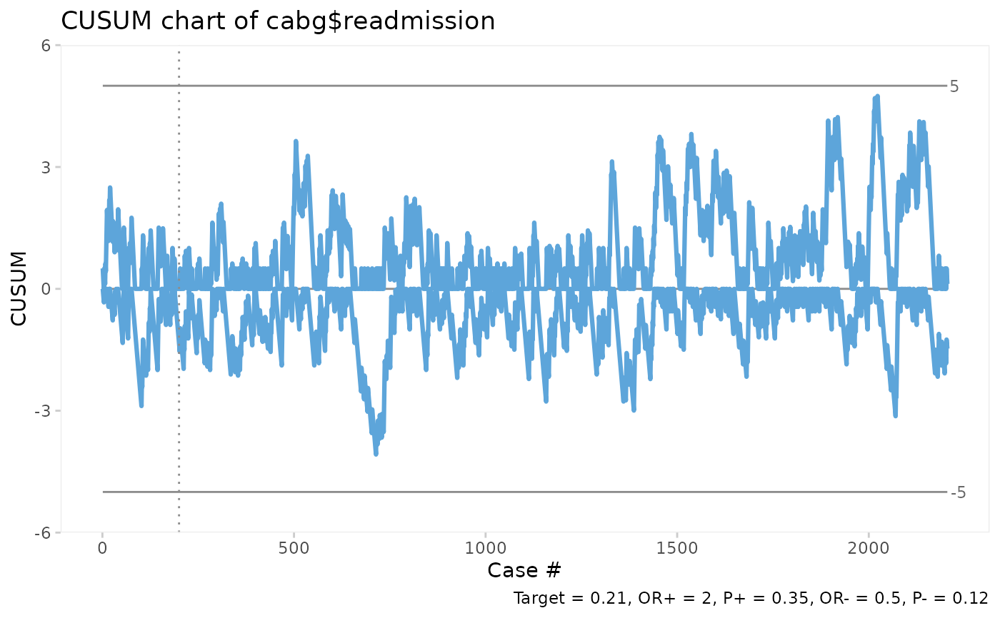

The Bernoulli CUSUM chart is useful for monitoring rare events data, e.g. surgical site infections and other types of complications. Based on Neuburger et al. (2017) doi:10.1136/bmjqs-2016-005526 .
Arguments
- x
Logical, vector of successes and failures.
- target
Baseline risk (0-1) or number (>1) of last observation to end baseline period. If NULL, use empirical mean.
- or
Positive odds ratio of minimal detectable change relative to baseline risk.
- limit
Control limit.
- title
Chart title.
- ylab
Y axis label.
- xlab
X axis label.
Details
Note that the diagnostic properties of the Bernoulli CUSUM chart is highly dependent on the choice of parameters, target, or and limit, and that these parameters should be decided by people with a solid understanding of the process at hand. The default parameters, or = 2 and limit = 3.5, should, however, work for most processes where the baseline (target) level is about 1 halving of the event rate relative to the target.
Examples
# Generate 1000 random successes and failures with success rate = 0.02
set.seed(1)
y <- rbinom(1000, 1, 0.02)
# Plot bchart assuming success rate = 0.01, OR = 2, control limits = +/- 3.5.
bchart(y, target = 0.01)

# Plot bchart of CABG mortality using the first 200 surgeries to estimate target.
bchart(cabg$death, target = 200)
 # Plot bchart of CABG readmissions setting the control limits = +/-5.
bchart(cabg$readmission, target = 200, limit = 5)

# Plot bchart of CABG readmissions setting the control limits = +/-5.
bchart(cabg$readmission, target = 200, limit = 5)
